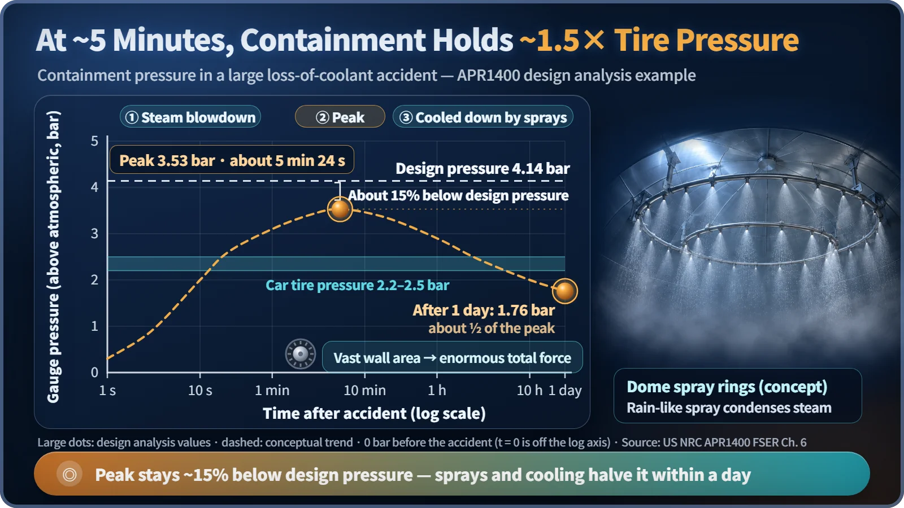
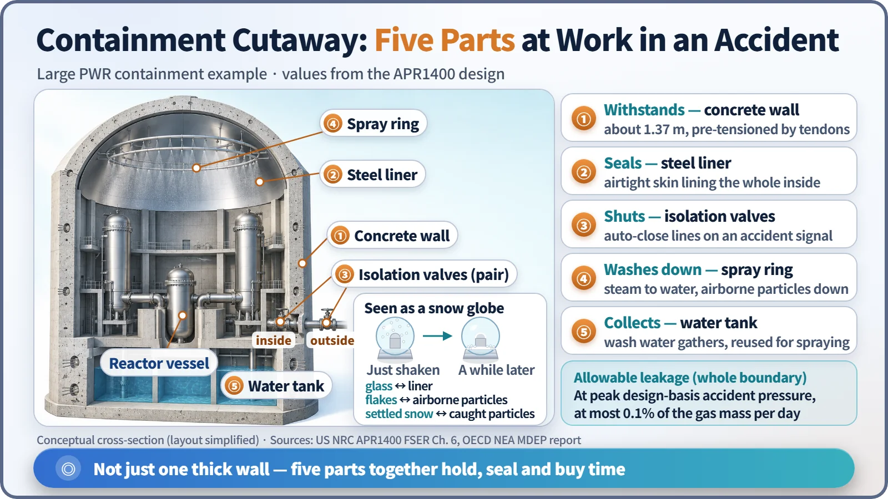

Safety Principles & Accident Analysis · 219
64 Million Versus 20: Lessons from a Snow Globe — What Containment Does in an Accident
At Three Mile Island, about 64 million curies of iodine-131 were in the core and less than 20 got out. The difference was the containment.
In an accident, the containment building withstands the pressure spike, seals in radioactive material, lets it settle and be washed down, and buys time for it to decay. At Three Mile Island in 1979, about 64 million curies of iodine-131 were in the core and less than 20 curies reached the outside, about one three-millionth. [3]
64 million and 20
In March 1979, about half the core melted at Three Mile Island Unit 2 in the United States. The core held about 64 million curies (Ci, a unit of radioactivity) of iodine-131, yet less than 20 curies made it outside the plant. The average extra dose to people nearby was around 0.01 millisieverts, less than a single chest X-ray. The rest stayed inside the dome-shaped building around the reactor: the containment building. [3]
Not the reactor, but the last layer around it
The round-roofed building in plant photos is not the reactor. The reactor is a steel vessel inside it. The containment is a sealed pressure building that wraps the reactor, coolant piping, pumps and steam generators all in one.
A plant traps radioactive material in several layers: ceramic fuel pellets, the metal cladding around them, the thick steel reactor vessel and piping, and finally the containment. When the inner layers fail, this is where the last catch is made.
The first five minutes: holding more than tire pressure
The most frightening case is a large pipe break, a loss-of-coolant accident. High-pressure water at nearly 300°C jets out and flashes to steam, and as the steam fills the building, pressure and temperature soar.
In the design analysis for South Korea's APR1400, about 5 minutes and 24 seconds into the accident, containment pressure peaks at 3.53 bar above atmospheric, about 1.5 times car-tire pressure (about 2.2 to 2.5 bar). That pressure pushes on the entire, enormous inner wall at once, so the total force is immense. [1]
| APR1400 containment | Value |
|---|---|
| Design pressure | 4.14 bar (gauge) |
| Analyzed accident peak | 3.53 bar at about 5 min 24 s (about 15% below design) |
| Pressure after one day | 1.76 bar (about half the peak) |
| Wall | about 1.37 m of prestressed concrete |
| Free volume | about 89,800 m³ (about 36 Olympic pools) |
The prestressed concrete is squeezed tight in advance by steel tendons, so it resists cracking when pushed from inside. And the bigger the free volume, the less the same steam raises the pressure. [2]

The pressure doesn't stay high for long. Containment sprays rain water from ring-shaped pipes in the dome and, with cooling equipment, turn steam back into water and carry heat away. A day later the pressure is about half the peak.
After you shake the snow globe
Holding out is only half the job. Shake a snow globe and the flakes fly everywhere, but while the glass is intact none get out, and left alone they settle to the bottom.
In containment, the floating fine particles of iodine and cesium are the "snowflakes," and the steel liner covering the inside of the building is the "glass." Particles settle on their own, and spray droplets catch airborne particles and wash them into the water on the floor. While held there, radioactive iodine halves every 8 days. Containment both traps material and buys time. (Unlike a snow globe, containment does build up pressure, and its "snow" decays away.)
Not leak-free, but leak-known
Containment has an allowable leak rate: for the APR1400, at most 0.1% of the weight of the air inside per day at peak design-basis accident pressure. [1]
Amount leaked ≈ leak rate × time × amount floating inside
At 0.1% per day, only about a thousandth of the airborne material could get out over a day, and as particles settle and pressure drops, the real figure is smaller still. The rate is checked periodically with an integrated leak rate test, pumping the building up to accident pressure and measuring the leakage. [5]
Holes matter too. Pipes and cables pass through the walls at a great many penetrations, and on an accident signal the isolation valves on unneeded lines close automatically. The small release at Three Mile Island didn't come through the walls: contaminated water from the building floor was moved to the neighboring auxiliary building before isolation, and gas escaped from there. That lesson led to tougher isolation criteria. [4]

Three misconceptions about containment
"Containment prevents accidents." Shutdown and cooling systems stop and cool the reactor; containment traps whatever escapes anyway.
"Thick concrete is all it takes." The liner, isolation valves and sprays have to work together.
"It holds out forever." If heat keeps coming and nothing cools it for a long time, pressure can climb again. At Fukushima in 2011, containment vessels were pushed past their design conditions, leading to leakage and venting. That's why separate equipment exists to cool the containment. [6]
Key takeaways
Containment does four things in an accident: it withstands the pressure, traps material by sealing the gaps, settles and washes down what floats, and buys time for radioactivity to decay. The distance between 64 million and 20 is the difference made by one layer of glass that shakes but doesn't break.